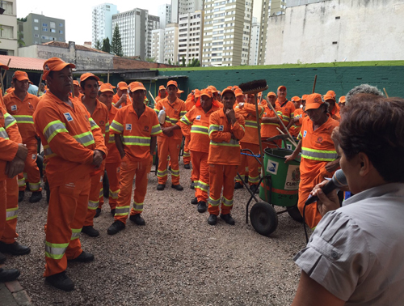
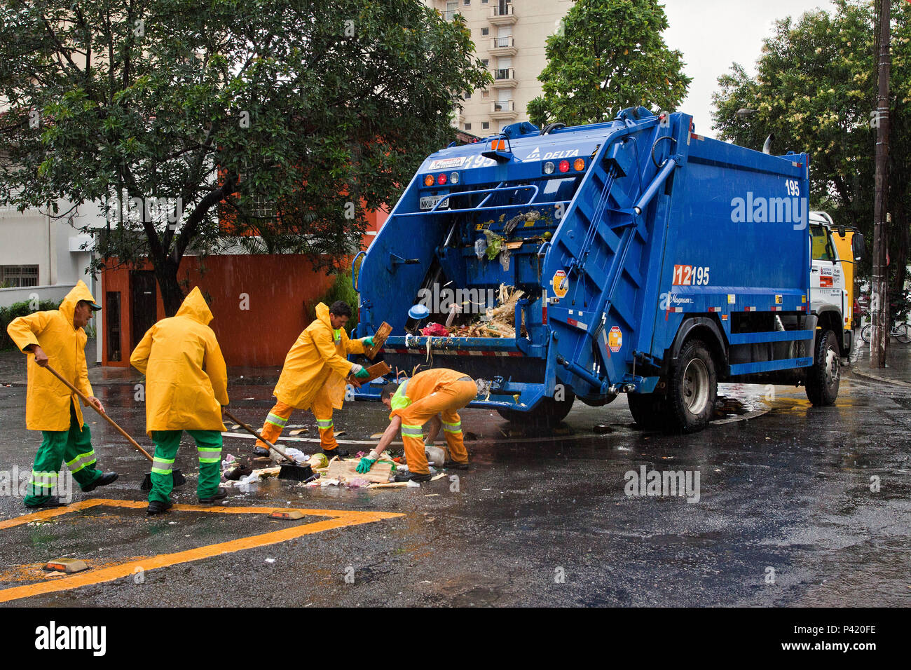

Importância dos Lixeiros
Os profissionais que trabalham na coleta e reciclagem de resíduos desempenham um papel vital na manutenção da limpeza das cidades e na preservação do meio ambiente.
Sem esses trabalhadores dedicados, a gestão de resíduos seria um desafio muito maior, resultando em acúmulo de lixo nas ruas, contaminação e diversos problemas de saúde pública.
Os lixeiros são responsáveis pela coleta, transporte e destinação correta dos resíduos, garantindo que o lixo reciclável seja separado e enviado para os locais apropriados.
Dados Importantes
Cerca de 1.3 bilhões de toneladas de resíduos sólidos são gerados anualmente no mundo.
Benefícios
A reciclagem reduz a emissão de gases de efeito estufa e economiza recursos naturais.
Impacto
Os lixeiros ajudam a manter as cidades limpas e a prevenir doenças.